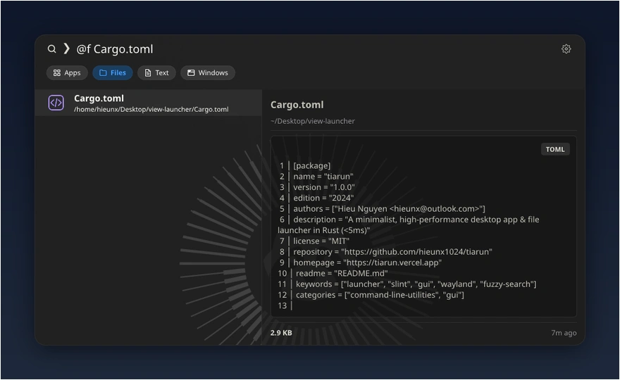
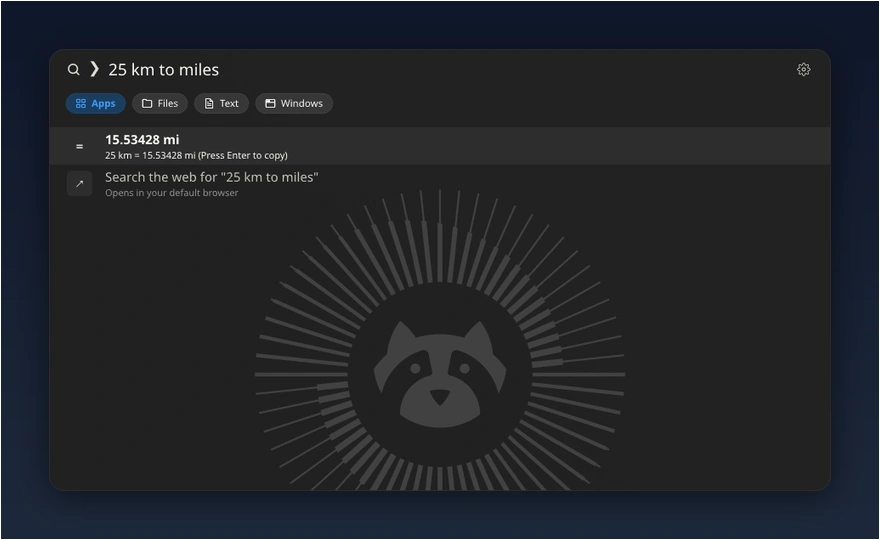
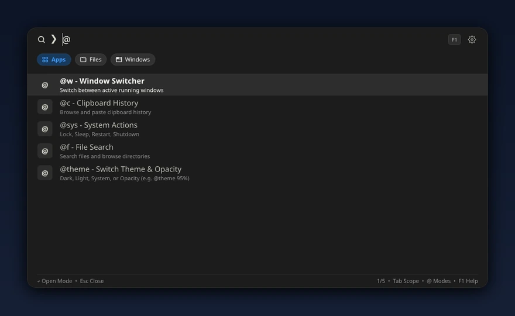

Switch scope quickly
Press Tab or Shift + Tab to cycle between Apps, Files, and Windows, or click a chip directly.
Search apps and files with accent-insensitive Vietnamese matching, preview contents inline, switch windows with CPU/RAM stats, and calculate right inside TiaRun.


firefoxSearch installed apps ranked by frequency (accent-insensitive). Press Enter to launch or Ctrl + C to copy.

@f Cargo.tomlSearch files with accent-insensitive matching (e.g. @f ke hoach for “Kế hoạch”) and preview code, text, images, or folders inline. Press → into subfolders, ← back out, Alt + T to open terminal.

25 km to milesEvaluate math expressions (including hex/binary), convert units, or check currency rates (auto-refreshed in background, works offline). Press Enter to copy.

@wInspect open windows with live CPU% and RAM stats, press Enter to focus, or Alt + K to kill the process. Supports Windows, Hyprland, Sway, KDE Wayland (kdotool), GNOME Wayland (Window Calls), and X11.

@cAutomatically records clipboard snippets across Windows, Wayland, and X11. Search and press Enter or Ctrl + C to copy again.

! ls -laRun any shell command directly in your terminal; use ↑ ↓ to recall previous shell commands.

@Browse all built-in search modes and run Rofi-compatible custom script plugins from your plugins/ folder.

@sysRun lock screen, sleep, restart, shutdown, or log out commands (or type lock, sleep, restart directly).

Ctrl + ,Customize Dark/Light/System theme, opacity (70%–100%), compact start view, bottom shortcuts bar, autostart, or edit config.toml; or type @theme.
Launch TiaRun once after installing, then toggle the command bar anytime with the global shortcut. Press F1 or type ? inside TiaRun for the live cheatsheet.
Ctrl + Alt + Space
Press Tab or Shift + Tab to cycle between Apps, Files, and Windows, or click a chip directly.
Type an app name, math expression, file path (~/..., C:\...), or use prefixes like @, !, and ?.
Use ↑ ↓ to select, Enter to run/open, Ctrl + C for smart copy, Alt + T to open terminal, Esc to dismiss.
firefox@f ke hoach · ~/...500 * 12 · 25 km to mi0xFF), convert units and currency rates@w@c@sys@theme@theme 90)@plugins/! ls -la? or F1! history@w window modeOn GNOME, KDE, or X11, bind Ctrl + Alt + Space to tiarun in your system keyboard shortcuts. On Sway or Hyprland, TiaRun supports automatic config setup or add exec tiarun --daemon for instant wakeup.
Press Ctrl + , and click Edit config.toml to customize search folders, depth, or web search engine (web_search_url). Drop scripts into ~/.config/tiarun/plugins/ (Linux) or %APPDATA%\tiarun\plugins\ (Windows), output lines formatted as Title | Subtitle | Icon | Exec (or plain Title to copy), and invoke with @script_name — see templates on GitHub.
Choose an installer, Linux package, or portable archive for x86-64 computers.
Installs TiaRun with Start Menu entries and the Ctrl+Alt+Space shortcut.
Extract and run tiarun.exe directly without admin installation.
Open the .deb or run sudo apt install ./tiarun_*.deb to install runtime libs automatically.
install.sh)Extract and run ./install.sh to install the binary, icons, and runtime packages (apt/pacman/dnf/zypper).
Install via AUR with Wayland/X11 dependencies included: yay -S tiarun-git
TiaRun searches installed applications and local files on your machine. When you pick a web search result, the query opens in your browser. Currency conversion refreshes exchange rates in the background and falls back to cached or built-in rates offline.
Bind Ctrl + Alt + Space to tiarun in your desktop's keyboard settings. For @w, window switching works out of the box on Windows, Sway, Hyprland, and X11/XWayland; KDE Wayland needs kdotool, GNOME Wayland needs the Window Calls extension, and Wayland clipboard recommends wl-clipboard (handled automatically by install.sh and .deb).
TiaRun creates the window once and keeps a background daemon running. Subsequent invocations send a socket signal to that process to show or hide the window instantly.
Press Ctrl + , to open Settings. You can also configure folders, search depth, web search engine, and exclusion rules in the TOML configuration file.
Place a script in ~/.config/tiarun/plugins/ (Linux, with chmod +x) or %APPDATA%\tiarun\plugins\ (Windows, supports .ps1, .bat, .cmd, .py, .exe), then type @script_name in TiaRun. Each line printed to stdout creates a result: use Title to copy on Enter, or Title | Subtitle | Icon | Exec to run a command or open a URL. See the plugin guide & templates.